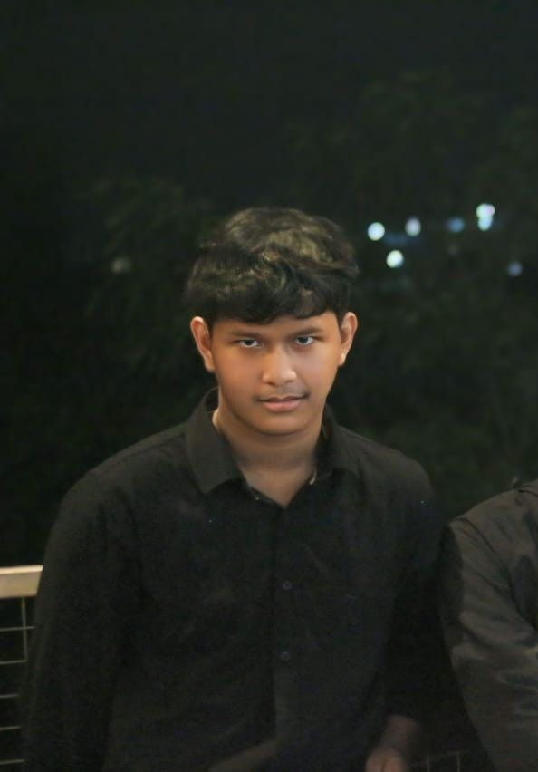

HI, I'M KEVIN!
CREATIVE Developer
Saya adalah seorang Fullstack Developer dan mahasiswa semester 4 di Teknik Informatika, Universitas Muhammadiyah Surakarta. Dengan minat yang kuat di dunia pengembangan perangkat lunak, saya memiliki pengalaman dalam membangun aplikasi web dan sistem berbasis teknologi modern.

APA YANG SAYA LAKUKAN
LAYANAN SAYA
💡 Desain UI/UX
Membuat antarmuka pengguna yang intuitif dan menarik, memberikan pengalaman yang mulus di berbagai perangkat.
🔗 Pelajari Lebih Lanjut💻 Pengembangan Web
Membangun website yang responsif dan berkinerja tinggi dengan tampilan menarik serta fungsionalitas yang optimal.
🔗 Pelajari Lebih Lanjut📱 Desain Aplikasi
Merancang aplikasi mobile dengan fokus pada kegunaan, estetika, dan keterlibatan pengguna.
🔗 Pelajari Lebih Lanjut